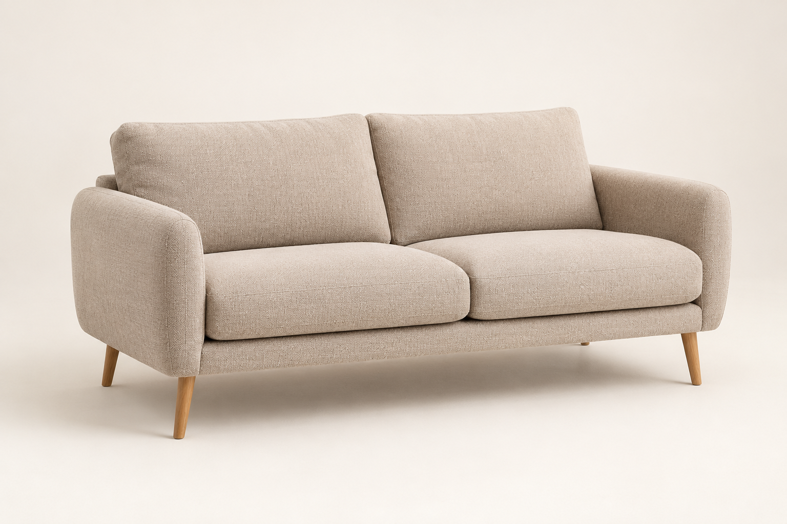
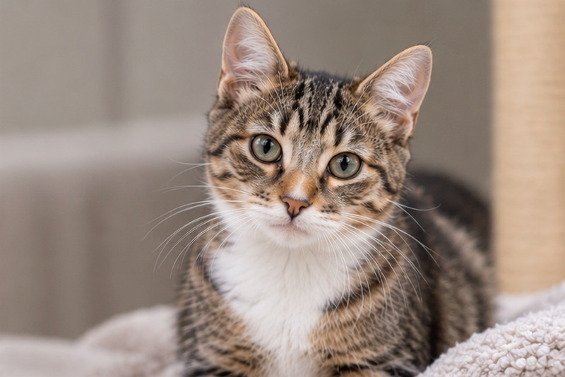
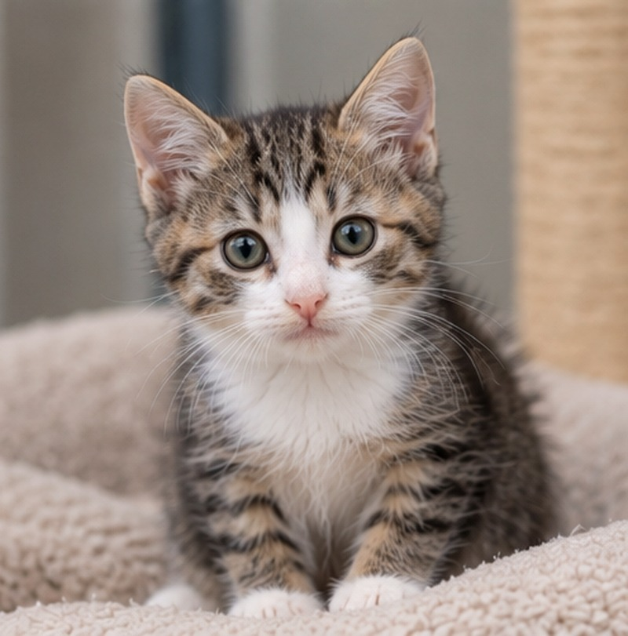
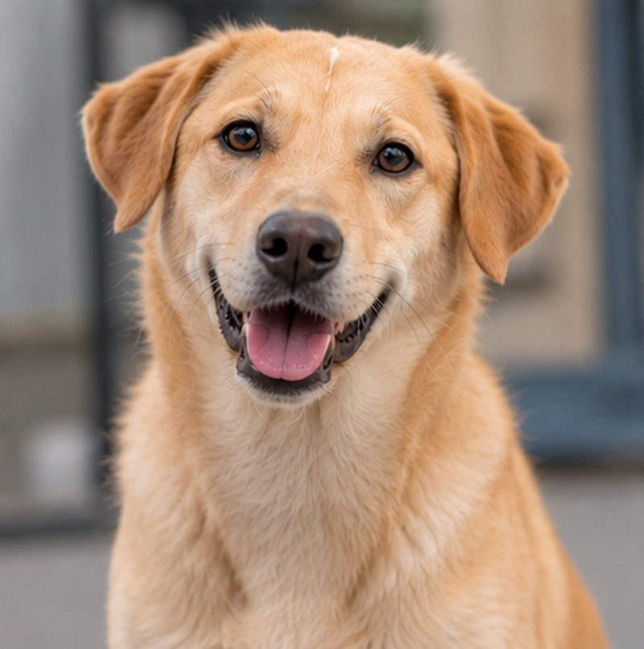
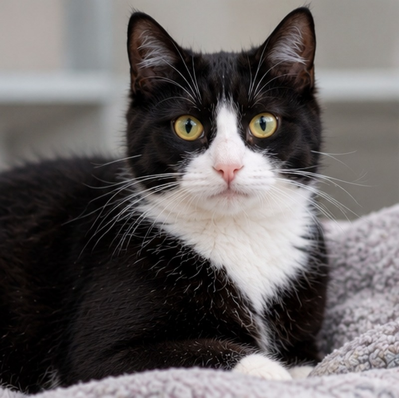
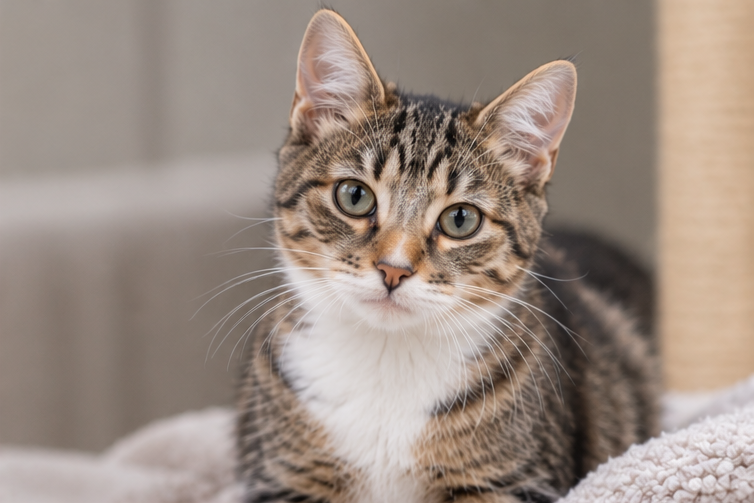

ЦЕЛЬ 1
Помочь животным найти семью
Дать питомцам из приютов дополнительную возможность познакомиться с потенциальными хозяевами через проверенные истории и анкеты.
Уютный дом начинается с любви. Помогаем животным из приютов найти семью — через контент, который каждый день встречается людям.
Посмотреть, как это работает →Это предложение о социальной инициативе, которая связывает тему дома с ответственным отношением к животным и помогает людям заметить питомца, которому нужна семья.
Дать питомцам из приютов дополнительную возможность познакомиться с потенциальными хозяевами через проверенные истории и анкеты.
Связать тему дома и заботы с конкретным полезным действием, не превращая социальную инициативу в рекламное обещание.
От короткой истории на странице товара — к полной анкете и контактам приюта.
Согласовать фотографии, сведения, город, ссылку и регулярное обновление статуса животного.
Измерить просмотры, переходы, обращения и нагрузку команды до решения о масштабировании.
Проект можно оценивать не по абстрактной «доброте бренда», а по понятным результатам: охват историй, переходы к партнёрам, обращения по анкетам, обратная связь пользователей и фактические трудозатраты.
Репутация и доверие. Конкретное действие подкрепляет ценности бренда.
Контент и отличие. Полезные истории дополняют стандартный товарный контент, не подменяя информацию о товаре.
Командная инициатива. Пилот позволяет проверить идею небольшими силами и с ограниченным бюджетом.
Понятная отчётность. Результаты и затраты фиксируются до решения о масштабировании.
Идея соединяет привычный выбор мебели с возможностью узнать животное, которому нужен дом.
Покупатель просматривает диваны, кресла и другие товары Hoff.
В дополнительном слайде появляется животное из приюта и его короткая история.
Ссылка ведёт на страницу приюта с актуальной информацией и контактами.
Один переход может стать началом знакомства и новой семейной истории.
Диван «Канзас» использовался только как пример структуры реальной карточки Hoff. В самом макете показана вымышленная модель дивана и условные характеристики. Предлагаемое место для социального модуля — после основного описания товара и до следующих информационных блоков, не вмешиваясь в цену, выбор размера, доставку и покупку.
Покупатель уже получил основную информацию о товаре. Отдельная история питомца продолжает тему дома и уюта, но не мешает оценить мебель и принять решение о покупке.
У участвующих в проекте товаров появляется небольшая единая иконка с лапой. Она помогает заметить инициативу ещё при просмотре каталога — до перехода в карточку.

🐾Иконка — условный графический элемент концепции. Иконка лапы размещена в левом нижнем углу изображения товара — отдельно от типичного места избранного в правом верхнем углу. Её следует сопровождать короткой подсказкой, чтобы пользователь понимал значение символа.
Вымышленный товар для макета. Это не модель из каталога Hoff. Изображение и характеристики созданы только для демонстрации того, как может выглядеть размещение истории питомца в карточке товара.
Можно добавить питомца уже на втором слайде галереи товара: первое фото остаётся чисто товарным, а следующее знакомит с инициативой. Внизу слайда — понятная подпись «Ознакомиться с историей питомца ниже».
Условный диван «Лён» — пример лаконичного описания мебели для дома. В настоящей карточке здесь остаётся официальное описание конкретного товара без изменений; социальная инициатива добавляется отдельным модулем ниже.
Бруно ищет семью. Посмотрите его историю, узнайте о характере и условиях пристройства у приюта-партнёра.
Это концептуальный макет, а не изменение действующей карточки Hoff. Диван «Лён», его изображение и характеристики вымышлены; «Канзас» был нужен только как ориентир структуры реальной страницы. Анкета Бруно также демонстрационная и не подтверждает, что собака находится в конкретном приюте или доступна для пристройства. Перед публикацией используются согласованные материалы и актуальная анкета партнёра.
Здесь нужны обычные портретные фотографии животных, которые приют использует в объявлениях о пристройстве: питомец в кадре, простой нейтральный фон, без мебели и рекламных надписей. Hoff-контекст остаётся в отдельном примере товара.
Дружелюбный пёс, которому нравятся прогулки и внимание человека.

Кот · примерВнимательный полосатый кот, который присматривается к новому человеку.

Котёнок · примерЛюбознательный малыш, которому нужны безопасность и забота.

Собака · примерОткрытый и ласковый пёс с золотистой шерстью.

Кошка · примерСпокойная чёрно-белая кошка, которой важно время на адаптацию.
Все анкеты и изображения в этом макете — демонстрационные. В рабочей версии карточки питомцев должны использовать отдельные портретные фотографии, предоставленные приютом, а не интерьерные изображения; имя, описание и ссылка проверяются перед публикацией.
Инициатива органично связана с категорией Hoff: дом — это не только интерьер, но и жизнь тех, кто в нём живёт. Контент с животными из приютов помогает бренду показывать заботу на конкретном примере, а не только заявлять о ценностях. Для покупателя это дополнительная полезная история внутри привычного сценария выбора товара; для Hoff — возможность проверить вовлечённость, полезность контента и репутационный эффект без обещаний прямого роста продаж, скидок или денежных пожертвований.
Чтобы инициатива была полезной и для животных, и для Hoff, ей нужны партнёры, проверенные анкеты и прозрачная схема работы.
Москва и Санкт-Петербург. По одному проверенному приюту или координирующей организации в каждом городе.
Приют подтверждает имя, возраст, характер, здоровье в допустимом объёме, условия пристройства и актуальность анкеты.
Согласованные фото и тексты, согласие партнёра на публикацию, регулярная проверка ссылок и снятие неактуальных анкет.
Отслеживаем просмотры и переходы, обращения в приюты, качество обратной связи и трудозатраты команды.
Hoff отвечает за редакционный формат, размещение и аналитику. Приют-партнёр отвечает за достоверность сведений, общение с потенциальными хозяевами и сам процесс пристройства. До запуска согласуются правила модерации, обработка обращений и порядок обновления информации.
1. Внутреннего координатора проекта и владельца процесса.
2. Партнёров по городам, юридические согласия на фото и текст.
3. Небольшую тестовую выборку товаров и контрольную группу для сравнения.
4. Критерии успеха, бюджет времени команды и условия расширения на другие города.
Важно: проект пока является предложением для обсуждения. Конкретные приюты, контакты, бюджеты, сроки и показатели должны быть подтверждены Hoff и партнёрами до запуска. Все животные, характеристики и товарные данные в демоверсии вымышлены.

В реальном проекте этот блок будет заполняться приютом-партнёром. Здесь не указаны реальные контакты, адрес или ссылка, чтобы не создавать ложное объявление о пристройстве.